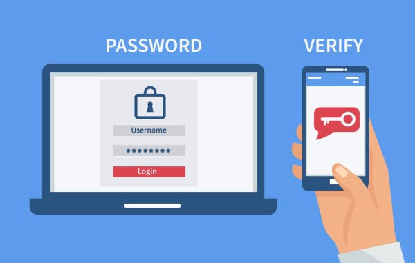

Um portal para aprender os conceitos de segurança da informação e LGPD, praticar com simulações e acompanhar seu progresso. Tudo roda no seu navegador, com dados fictícios.
Quatro módulos para entender o terreno antes de praticar.
Confidencialidade: só quem tem autorização acessa a informação.
Integridade: a informação não é alterada sem permissão nem sem registro.
Disponibilidade: a informação está acessível quando quem precisa dela precisa.
Phishing: mensagem falsa que imita uma marca ou pessoa para roubar dados ou fazer você clicar.
Malware: software malicioso, como vírus, spyware e adware.
Ransomware: sequestra arquivos e cobra resgate para devolvê-los.
Engenharia social: manipula pessoas, não sistemas, usando urgência, medo ou autoridade.
Dado pessoal identifica ou pode identificar uma pessoa (nome, CPF, e-mail). Dado pessoal sensível envolve origem racial, religião, opinião política, saúde, vida sexual, dado genético ou biométrico.
Direitos do titular: confirmação de tratamento, acesso, correção, anonimização, portabilidade, eliminação e informação sobre compartilhamento.
Empresas precisam de base legal, finalidade clara, coleta mínima, medidas de segurança e comunicação de incidentes relevantes.
Use senhas longas e únicas, com um gerenciador de senhas. Ative a autenticação em dois fatores. Faça backups e teste a restauração. Mantenha sistemas atualizados e desconfie de links e anexos inesperados.

Filtre por categoria e abra uma ameaça para ver como funciona, como identificar, como se proteger e o que fazer.
Uma ordem sugerida de atividades. Os passos são marcados conforme você conclui cada uma, neste navegador.
Quatro experiências práticas. Nada é enviado nem armazenado: as senhas e os dados que você digita ficam só no navegador.
Dez perguntas sobre seus hábitos. O relatório é educativo e não substitui uma auditoria.
Cinco perguntas com pontuação e explicação.
Seu progresso fica salvo apenas neste navegador, sem cadastro.
Marque o que sua empresa já faz. É um guia educativo, não uma auditoria.
Materiais de referência para aprofundar.
Texto da lei no portal do Planalto.
Orientações e guias da Autoridade Nacional de Proteção de Dados.
Cartilha de Segurança para Internet.
2FA ligado, senhas únicas, backup testado, sistema atualizado.